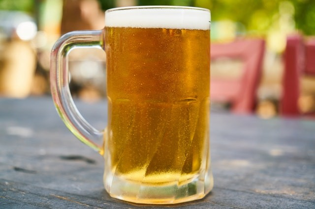

Produtos
Nossas cervejas são produzidas conforme a lei de pureza alemã e com as melhores matérias-primas disponíveis no mercado, click nas fotos para acessar.

Session IPA é uma cerveja mais leve e sem aquele amargor excessivo das IPAs que estamos acostumados a encontrar, mas não perdendo seus atributos de aroma e sabor que são muito intensos
American Amber Ale ou Triple A como gostamos de chamar é uma cerveja artesanal de cor que pode variar de âmbar a vermelho, lupulada, de intensidade moderada com um sabor maltado de caramelo.
APA tornou-se um estilo de cerveja internacional, com adaptações locais surgindo em muitos países com um crescimento vertiginoso do mercado de cerveja artesanal. Aroma e sabor não fatam!
Wheat Ale é originalmente, uma adaptação ao estilo Weissbier alemão, mas sem o caráter de banana e cravo. Leve, quase nulo sabor de trigo por ter a característica mais lupulada. Os lúpulos americanos dominam o cenário.
Uma ale belga moderadamente maltado, um pouco frutado, fácil de beber, de cor acobreada que é um pouco menos agressiva no perfil de sabor do que muitas outras cervejas belgas. Mais comumente encontradas nas províncias flamencas da Antuérpia e Brabant.
Hoppy golden é uma Bitter clara orientada ao lúpulo, de intensidade moderadamente forte. A drinkability e a qualidade de refrescância são componentes críticos ou frutados do estilo.
Uma Lager limpa, bem-atenuada e saborosa, fácil de beber e refrescante, mas com mais corpo do que as típicas lagers. Lúpulos nobres com caráter floral, picante e herbal.
TELEBIER
Entregamos somente para a região de Torres e suas cercanias.
Click nos números abaixo e fale diretamente pelo whatsapp com Diego ou Cristiano, obrigado!
“Pessoas boas bebem boas cervejas.” – (Antigo provérbio celta)